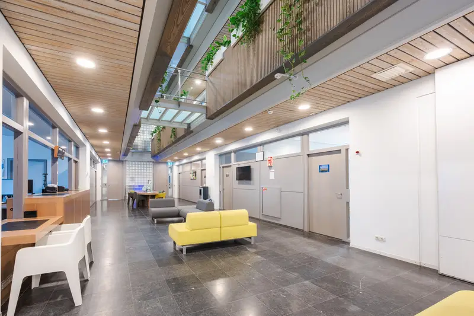
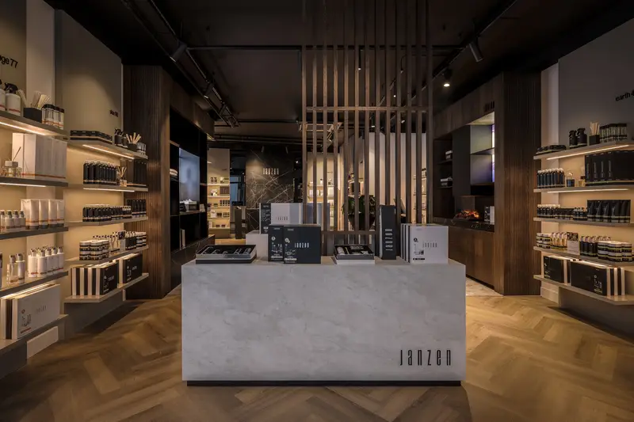
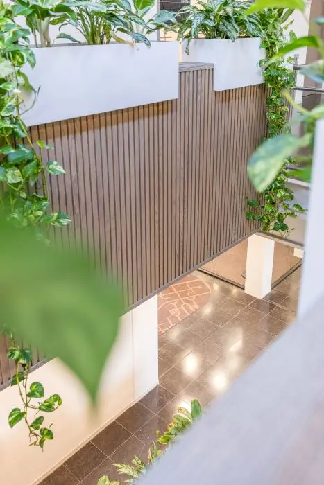
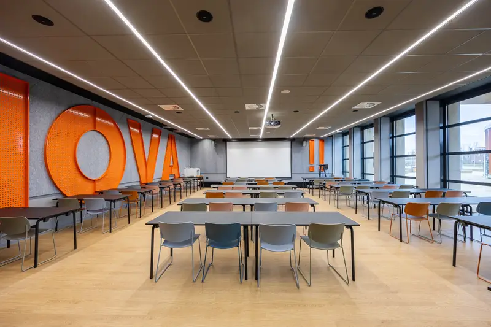
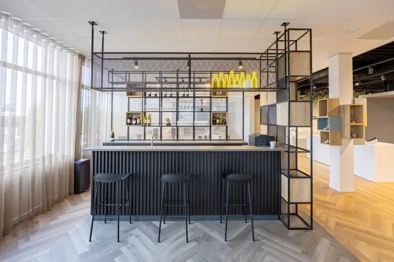
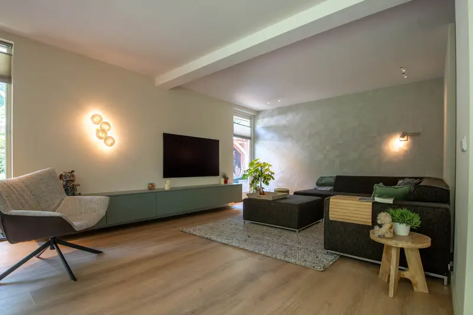
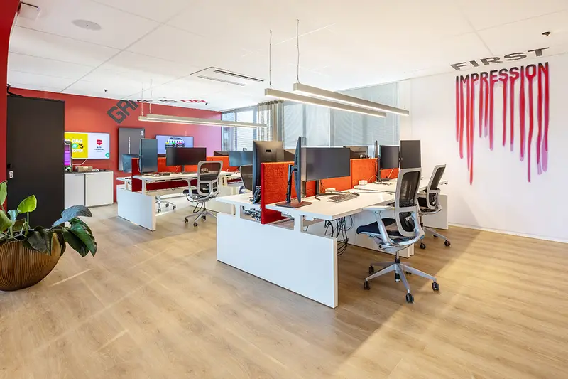
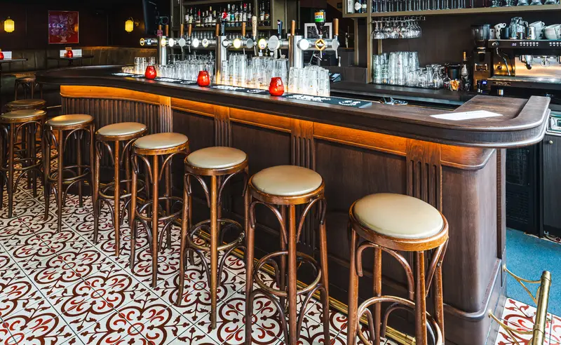
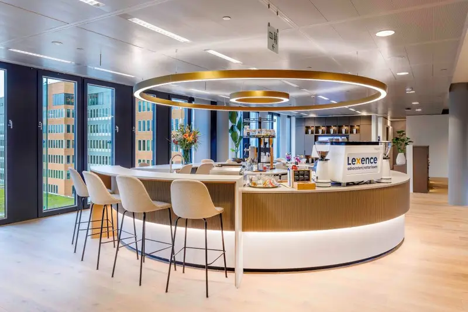
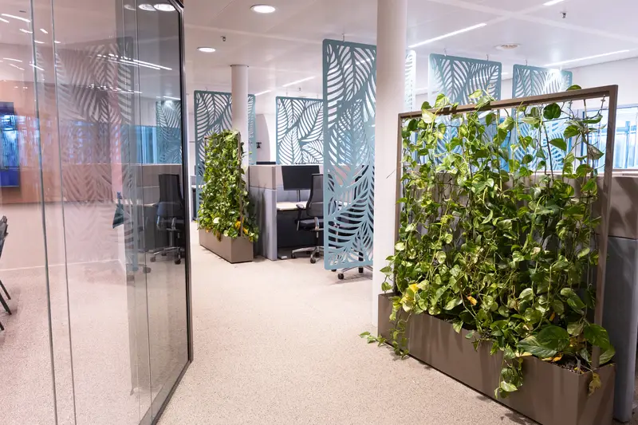

Sloopwerk
Sloopwerk is de eerste stap. Of het nu gaat om het strippen van een ruimte of het verwijderen van wanden en plafonds: we slopen veilig en gecontroleerd, zonder schade aan wat moet blijven staan.
Interieurbouw en afbouw uit Den Bosch, sinds 2000

Wij verzorgen het volledige traject, van sloopwerk en wanden tot plafonds, verlichting, vloeren en klimaat.

Sloopwerk is de eerste stap. Of het nu gaat om het strippen van een ruimte of het verwijderen van wanden en plafonds: we slopen veilig en gecontroleerd, zonder schade aan wat moet blijven staan.

Metal stud wanden met gipsplaten, systeemwanden voor flexibele werkplekken, gipswanden en glazen wanden in helder, privacy- of mat glas. Strakke muren, behang of een speciale afwerking.

Van systeemplafonds voor kantoren en scholen tot designplafonds. Geluidsabsorberend waar het moet, met geïntegreerde verlichting waar het kan.

Stroompunten, verlichting en netwerkbekabeling, goed verdeeld zodat de ruimte direct klaar is voor gebruik en je later niets hoeft aan te passen.

Ventilatie, verwarming en koeling voor een gezond binnenklimaat. Met warmtepompen, slimme thermostaten en warmteterugwinning waar dat past.

Strak pleisterwerk, decoratieve afwerking of het egaliseren van ondergronden. Voor nieuwbouw en renovatie, klaar voor verdere afwerking of direct in gebruik.

Binnen- en buitenschilderwerk met duurzame verf. We adviseren over kleur en afwerking en werken met zo min mogelijk overlast voor je bedrijfsvoering.

Gietvloeren, tegels, houten vloeren of geluiddempende tapijttegels. Met een perfecte aansluiting op de rest van de ruimte.

Vloer- en wandtegels, grootformaat of mozaïek, voor keukens, badkamers en andere ruimtes die een hoogwaardige afwerking vragen. In heel Brabant.

Functioneel licht voor werkplekken, sfeerverlichting, indirect licht en zuinige LED. Van systeemplafonds met LED-panelen tot maatwerk lichtoplossingen.

Wij coördineren alle werkzaamheden en zorgen dat elk detail klopt, zonder dat jij je zorgen hoeft te maken over planning of uitvoering. Omdat we ook het interieur maken, loopt het ontwerp naadloos over in de uitvoering.
We komen langs voor een opname, maken foto's en meten nauwkeurig op. Daarna krijg je een offerte op maat.